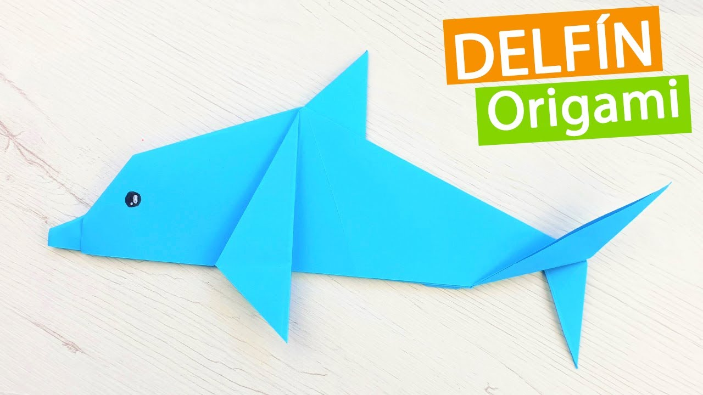

Instrucciones y Diagramas de Origami
Los diagramas paso a paso son probablemente la forma más popular
y fácil de seguir para mostrar cómo doblar papel. Sin embargo,
tratar de encontrar buenas instrucciones de origami en Internet
puede ser mucho trabajo. Para ayudarte en tu búsqueda, hemos reunido
la mayor base de datos de diagramas de origami gratuitos en Internet.

Dragones
- No se han visto nunca dragones en América ni Australia
- Los dragones escupefuego pueden, como su nombre indica, escupir fuego
- Los humanos, más concretamente los magos, esclavizaban a los dragones para que cuidaran de sus tesoros

Ranas
- Las ranas cambian de piel una vez por semana
- No pueden vivir en el agua salada
- Tienen la capacidad de ver en diferentes direcciones al mismo tiempo

Dinosaurios
- Eran de colores vivos y variados
- La mayoría de los dinosaurios eran herbívoros.
- Se estima que podían llegar a vivir hasta 100 años

Delfines
- Cada delfín tiene un nombre único que lo diferencia de los otros
- Carecen del sentido del olfato
- Duermen con un ojo abierto
Serpientes
- Habitan el planeta Tierra desde hace aproximadamente 150 millones de años
- Existen poco más de 3,000 especies de serpientes
- Las serpientes de cascabel son las más venenosas del mundo
Jirafas
- Su lengua puede tener hasta 50 centímetros
- Sus manchas indican su edad
- Una jirafa puede alcanzar los 50 km/h